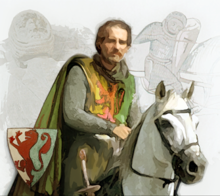
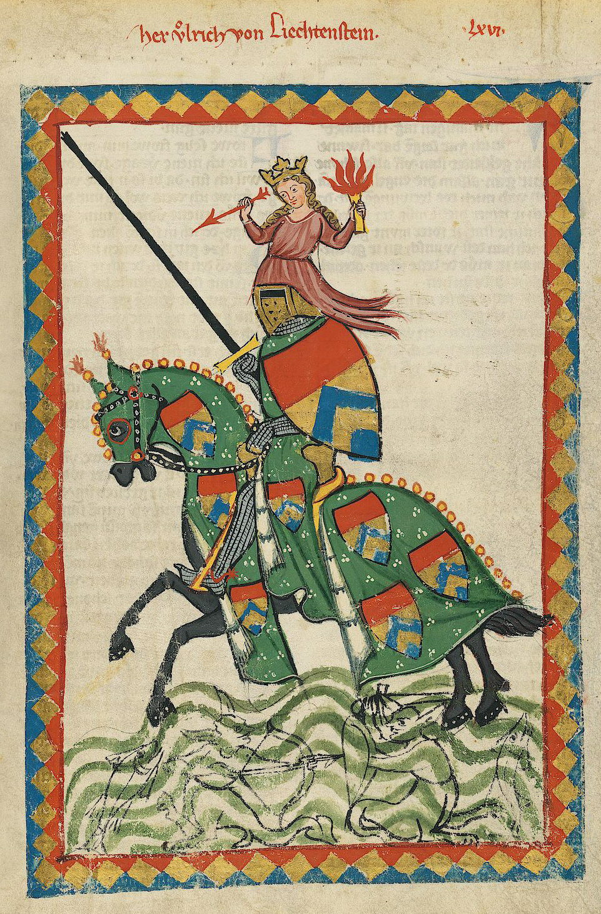
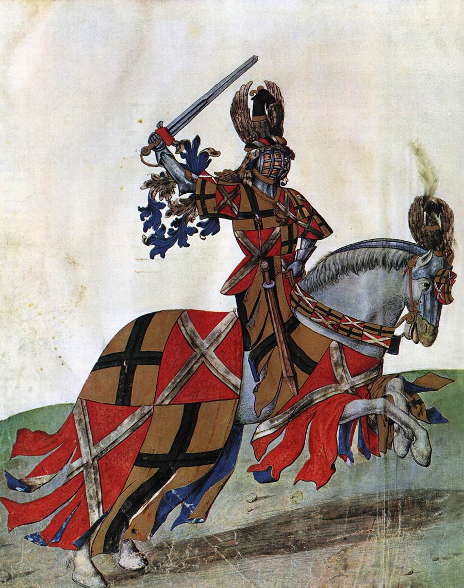

Pemain Terkenal dalam Jousting
Dibawah ini adalah beberapa kesatria Jousting yang pernah terkenal pada masanya
-
William Marshal

William Marshal sering dianggap sebagai salah satu kesatria paling terampil pada zamannya. Ia dikenal bukan hanya karena kekuatan fisiknya, tetapi juga kecerdasannya dalam membaca ritme pertandingan. Marshal mampu menilai jarak dan sudut serangan lawan hanya dari gerakan kecil pada bahu atau perisai mereka. Kemampuan ini membuatnya sangat sulit diprediksi dan jarang terkena serangan langsung. Selain itu, ia memiliki kontrol kuda yang sangat baik, sehingga mampu menyesuaikan kecepatan pada detik-detik terakhir untuk mendapatkan posisi serang terbaik. Stabilitas tubuhnya saat menerima benturan menjadi salah satu ciri khasnya, sehingga dalam banyak pertandingan ia dapat mematahkan tombak lawan tanpa kehilangan keseimbangan.
-
Ulrich von Liechtenstein

Ulrich terkenal sebagai kesatria dengan teknik tombak yang sangat halus dan akurat. Ia sering menekankan pentingnya sudut tombak dan penempatan perisai untuk mengurangi energi benturan. Ulrich memiliki reputasi tinggi karena mampu mempertahankan garis serang lurus meskipun kudanya bergerak tidak stabil, sebuah kemampuan yang memerlukan kontrol otot dan konsentrasi tingkat tinggi. Dalam banyak catatan lama, ia dikenal mampu menyesuaikan posisi tubuh hanya dalam sepersekian detik sebelum kontak, memungkinkan pukulan yang lebih tajam dan sering mematahkan tombak lawan. Ia juga dikenal sportif dan sering menolak mengambil keuntungan dari kesalahan kecil lawan jika dianggap tidak adil.
-
René of Anjou

René bukan hanya seorang pemain, tetapi juga pencetus banyak aturan formal dalam olahraga jousting. Ia dikenal karena pendekatannya yang sangat teknis, memperlakukan jousting sebagai kombinasi antara strategi dan ketelitian mekanis. René sering menganalisis bentuk armor, titik kuat dan lemah perisai, hingga bagaimana arah angin dapat memengaruhi keseimbangan kuda. Dalam pertandingan, ia mengandalkan konsistensi — bukan pukulan keras — untuk memenangkan ronde demi ronde. Stabilitas tubuhnya tinggi karena ia menjaga napas dan ritme pergerakan sebelum bertabrakan dengan lawan. Dalam banyak turnamen, René mampu menahan serangan-serangan kuat hanya dengan penempatan perisai yang presisi.
-
Henry Lee

Sir Henry Lee adalah seorang bangsawan dan ksatria Inggris pada masa Ratu Elizabeth I, dan ia dikenal sebagai Master of the Armoury serta penyelenggara utama turnamen jousting kerajaan di Inggris pada abad ke-16. Ia secara aktif berpartisipasi dalam jousting, terutama dalam acara tahunan Accession Day Tilts, yaitu turnamen resmi untuk merayakan naik tahta Ratu Elizabeth I. Henry Lee bukan ksatria perang garis depan seperti William Marshal, tetapi ia adalah ksatria turnamen profesional dalam konteks jousting yang sudah berkembang menjadi olahraga dan pertunjukan resmi kerajaan. Ia dikenal karena gaya bertarungnya yang terkontrol, penggunaan armor khusus turnamen, serta perannya dalam mengembangkan aturan dan estetika jousting era Renaissance. Banyak ilustrasi dan lukisan Henry Lee menampilkan dirinya lengkap dengan armor dan kuda jousting, sehingga ia justru lebih mudah dicari gambarnya dibanding ksatria abad pertengahan awal.